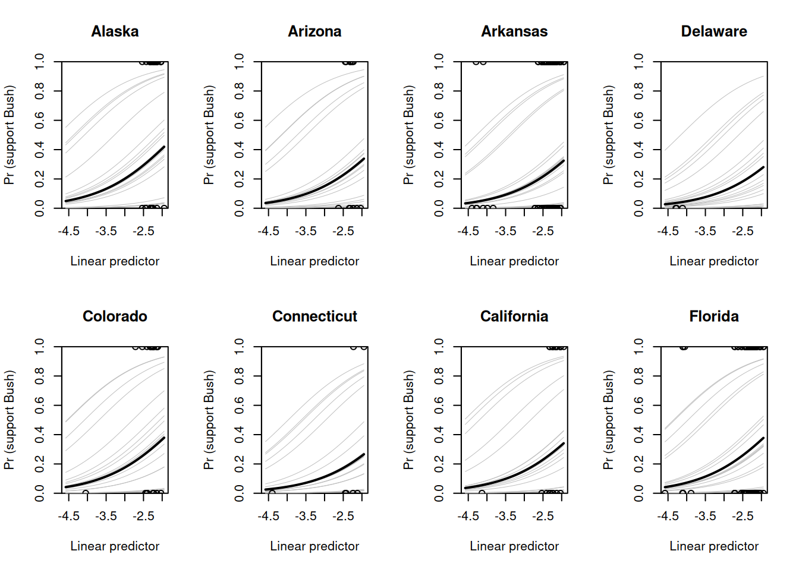

── Attaching core tidyverse packages ──────────────────────── tidyverse 2.0.0 ──
✔ dplyr 1.1.4 ✔ readr 2.1.5
✔ forcats 1.0.0 ✔ stringr 1.5.1
✔ ggplot2 3.5.0 ✔ tibble 3.2.1
✔ lubridate 1.9.3 ✔ tidyr 1.3.1
✔ purrr 1.0.2
── Conflicts ────────────────────────────────────────── tidyverse_conflicts() ──
✖ dplyr::filter() masks stats::filter()
✖ dplyr::lag() masks stats::lag()
ℹ Use the conflicted package (<http://conflicted.r-lib.org/>) to force all conflicts to become errors
library ("arm")
Loading required package: MASS
Attaching package: 'MASS'
The following object is masked from 'package:dplyr':
select
Loading required package: Matrix
Attaching package: 'Matrix'
The following objects are masked from 'package:tidyr':
expand, pack, unpack
Loading required package: lme4
arm (Version 1.14-4, built: 2024-4-1)
Working directory is /home/lbarboza/Dropbox/Cursos/Actuales/SP1653/NotasClase/ModelosMixtos/ModelosMixtos
data (state) # "state" is an R data filestate.abbr <-c (state.abb[1:8], "DC", state.abb[9:50])dc <-9not.dc <-c(1:8,10:51)region <-c(3,4,4,3,4,4,1,1,5,3,3,4,4,2,2,2,2,3,3,1,1,1,2,2,3,2,4,2,4,1,1,4,1,3,2,2,3,4,1,1,3,2,3,3,4,1,3,4,1,2,4)library(haven)polls <-read_dta("data/ARM_Data/election88/polls.dta")polls.subset <- polls %>%filter(survey ==8)polls.subset <- polls.subset %>%rename (y = bush)presvote <-read_dta('data/ARM_Data/election88/presvote.dta')v.prev <- presvote$g76_84prnot.dc <-c(1:8,10:51)candidate.effects <-read.table("data/ARM_Data/election88/candidate_effects.dat",header = T)v.prev[not.dc] <- v.prev[not.dc] + (candidate.effects$X76 + candidate.effects$X80 + candidate.effects$X84)/3n.edu <-max(polls.subset$edu)# Reparametrizacion de la interacciónpolls.subset <- polls.subset %>%mutate(age.edu = n.edu*(age-1) + edu,v.prev.full = v.prev[state],region.full = region[state])
6.1.2 Model Specification
Simple Model with Demographic and Geographic Variation
We model survey responses, where each response \(y_i\) is coded as: - \(y_i = 1\) for supporters of the Republican candidate - \(y_i = 0\) for supporters of the Democrat
Undecideds are excluded, and we assume the responses are independent, with: \[
\Pr(y_i = 1) = \text{logit}^{-1}(X_i \beta)
\]
6.1.3 Model Inputs
The input variables include: - State index\(j[i]\): to account for geographic variation. - Demographic predictors: categorical variables for sex, ethnicity, age, and education (used by CBS in survey weighting).
6.1.4 Multilevel Logistic Regression Example
We demonstrate multilevel logistic regression with: - Two individual predictors: female and black - 51 states with varying intercepts
where: - \(\alpha_j \sim N(\mu_\alpha, \sigma_{\text{state}}^2)\) for each state \(j = 1, \dots, 51\)
This model structure captures both individual demographic effects and state-level geographic variation in political support.
6.2 Fuller Model Including Non-Nested Factors
This expanded model incorporates a comprehensive set of demographic and geographic predictors used in CBS survey weighting.
6.2.1 Model Structure
We include: - Demographic Predictors: - Sex × Ethnicity and Age × Education interactions - Four age categories and four education categories with varying intercepts - A 16-level interaction between age and education - State-level Predictors: - Indicators for the 5 regions of the country (Northeast, Midwest, South, West, and D.C.) - v.prev: Average Republican vote share in the three previous elections, adjusted for home-state and home-region effects
The model uses indices \(j\), \(k\), \(l\), and \(m\) for state, age category, education category, and region, respectively.
6.2.2 Model Specification
The probability of supporting the Republican candidate is given by:
This model captures a complex structure of individual and group-level interactions, enabling us to account for detailed demographic and geographic variations in voting behavior.
6.2.5 Fitting the Model
# Load necessary librarylibrary(R2jags)
Loading required package: rjags
Loading required package: coda
Attaching package: 'coda'
The following object is masked from 'package:arm':
traceplot
Linked to JAGS 4.3.2
Loaded modules: basemod,bugs
Attaching package: 'R2jags'
The following object is masked from 'package:coda':
traceplot
The following object is masked from 'package:arm':
traceplot
attach(polls.subset)
The following object is masked from package:MASS:
survey
# Adjust `state` to be within 1 to n.state if neededstate <-as.numeric(factor(state)) # Convert to consecutive integers starting from 1data_jags <-list(y = y,female = female,black = black,age = age,edu = edu,state = state, # Adjusted stateregion = region,v.prev = v.prev,n =length(y),n.age =length(unique(age)),n.edu =length(unique(edu)),n.state =length(unique(state)),n.region =length(unique(region)))# Initial values for the parametersinits <-function() {list(b.0 =rnorm(1),b.female =rnorm(1),b.black =rnorm(1),b.female.black =rnorm(1),b.age =rnorm(data_jags$n.age),b.edu =rnorm(data_jags$n.edu),b.age.edu =matrix(rnorm(data_jags$n.age * data_jags$n.edu), nrow = data_jags$n.age),b.state =rnorm(data_jags$n.state),b.region =rnorm(data_jags$n.region),b.v.prev =rnorm(1),sigma.age =runif(1, 0, 100),sigma.edu =runif(1, 0, 100),sigma.age.edu =runif(1, 0, 100),sigma.state =runif(1, 0, 100),sigma.region =runif(1, 0, 100) )}# Parameters to monitorparams <-c("b.0", "b.female", "b.black", "b.female.black", "b.age", "b.edu", "b.age.edu", "b.state", "b.region", "b.v.prev", "sigma.age", "sigma.edu", "sigma.age.edu", "sigma.state", "sigma.region")# Fit the model with JAGSjags_fit <-jags(data = data_jags, inits = inits, parameters.to.save = params, model.file ="codigoJAGS/logistic.jags", n.chains =3, n.iter =5000, n.burnin =1000, n.thin =10)
module glm loaded
Compiling model graph
Resolving undeclared variables
Allocating nodes
Graph information:
Observed stochastic nodes: 2015
Unobserved stochastic nodes: 266
Total graph size: 17210
Initializing model
The following object is masked from 'package:arm':
rescale
The following object is masked from 'package:purrr':
discard
The following object is masked from 'package:readr':
col_factor
Loading required package: ggridges
New to ggformula? Try the tutorials:
learnr::run_tutorial("introduction", package = "ggformula")
learnr::run_tutorial("refining", package = "ggformula")
Loading required package: bayesplot
This is bayesplot version 1.11.1
- Online documentation and vignettes at mc-stan.org/bayesplot
- bayesplot theme set to bayesplot::theme_default()
* Does _not_ affect other ggplot2 plots
* See ?bayesplot_theme_set for details on theme setting
Attaching package: 'CalvinBayes'
The following object is masked from 'package:bayesplot':
rhat
The following object is masked from 'package:datasets':
HairEyeColor
6.4 Graphing the Estimated Model for a Binary Outcome”
6.4.1 Overview
In this analysis, we aim to create summary plots for a multilevel model with a binary outcome, similar to the multilevel models in Chapters 12 and 13. We make two main adjustments for these plots:
Binary Outcome: Since the outcome is binary, we plot the predicted probability \(\Pr(y = 1) = E(y)\) as a function of the predictors, resulting in curved plots similar to those for generalized linear models.
Combined Predictors: With multiple predictors in the model, we combine them into a single linear predictor for demographics, called linpred, rather than plotting each predictor individually.
6.4.1.1 Linear Predictor Definition
The combined demographic linear predictor for individual \(i\) is defined as:
Estimates, along with their 50% and 95% intervals for each demographic coefficient, are shown below. These estimates can be interpreted directly as each predictor’s contribution to the sum \(X_i \beta\). For example, to predict the probability of a Republican vote for a female, aged 20, with no high school diploma, we would:
Sum the constant term and the estimates for the corresponding main effects and interactions.
Take the inverse-logit transformation to obtain the probability.
6.4.1.3 Regression Prediction for Survey Respondents
For each respondent \(i\), we can write the prediction as:
where \(\text{linpred}_i\) is the demographic linear predictor and \(\alpha^{\text{state}}_{j[i]}\) is the state effect. This can then be plotted for each state.
6.4.2 R Code for Computing and Plotting linpred
After fitting the model in JAGS , we can compute linpred using the simulations of the fitted model
attach.jags(jags_fit) # Attach model output for access to parameter arraysattach(data_jags)
The following objects are masked _by_ .GlobalEnv:
n.edu, region, state, v.prev
The following objects are masked from polls.subset:
age, black, edu, female, state, y
We create a plot for each displayed state showing the predicted probability of supporting Bush as a function of the linear predictor linpred.
par(mfrow =c(2, 4)) # Arrange plots in a 2x4 griddisplayed.states <-c(2,3,4,8,6,7,5,9)for (j in displayed.states) {plot(0, 0, xlim =range(linpred), ylim =c(0, 1), yaxs ="i",xlab ="Linear predictor", ylab ="Pr (support Bush)",main = state.name[j], type ="n")# Plot 20 simulated probability curves for the statefor (s in1:20) {curve(invlogit(b.state[s, j] + x), lwd =0.5, add =TRUE, col ="gray") }# Plot the median probability curve for the statecurve(invlogit(median(b.state[, j]) + x), lwd =2, add =TRUE)# Add observed points for the current stateif (sum(state == j) >0) {points(linpred[state == j], y[state == j]) }}

6.4.4 Interpretation
In the resulting plots: - The gray lines represent the simulated probability curves for each state. - The bold line represents the median probability curve. - Observed points are plotted for individuals in each state.
These plots illustrate how the demographic predictors and state effects contribute to the probability of supporting Bush.
6.5 Estimating Average Opinion by State Using Model Inferences
6.5.1 Overview
The logistic regression model provides a way to estimate the probability that any adult in a given demographic group and state will prefer Bush. Using these probabilities, we can compute weighted averages to estimate the proportion of Bush supporters in different population subsets.
6.5.1.1 Data Preparation
Using data from the U.S. Census, we create a dataset of 3264 cells (cross-classifications of demographics and states) with each cell representing a unique combination of: - Sex - Ethnicity - Age - Education level - State
Each cell contains the number of people fitting that combination, stored in the census data frame.
6.5.1.2 Calculating Expected Support for Bush (y.pred)
After fitting the model in JAGS and obtaining n.sims simulation draws, we calculate y.pred, the predicted probability of supporting Bush for each demographic cell in each simulation.
# Assuming `census` contains the demographic and state information for each celllibrary (foreign)library(tidyverse)census <-read.dta ("data/ARM_Data/election88/census88.dta")census <- census %>%filter(state <=49)L <-nrow(census) # Number of census cellsy.pred <-array(NA, c(n.sims, L)) # Initialize a matrix to store predictionsfor (l in1:L) { y.pred[, l] <-invlogit( b.0+ b.female * census$female[l] + b.black * census$black[l] + b.female.black * census$female[l] * census$black[l] + b.age.adj[, census$age[l]] + b.edu.adj[, census$edu[l]] + b.age.edu.adj[, census$age[l], census$edu[l]] + b.state[, census$state[l]] )}
6.5.2 Estimating Average Support by State
For each state \(j\), we estimate the average response by taking a weighted sum of predictions across the 64 demographic categories within the state. This weighted average reflects the expected proportion of Bush supporters in each state.
The weighted average for state \(j\) is calculated as:
where: - \(N_l\) is the population count for demographic group \(l\) in state \(j\). - \(\theta_l\) is the predicted probability of support for Bush for group \(l\).
# Initialize an array to store state-level predictionsy.pred.state <-array(NA, c(n.sims, n.state))# Compute state-level weighted averages of predictionsfor (s in1:n.sims) {for (j in1:n.state) { ok <- census$state == j # Identify cells corresponding to state j y.pred.state[s, j] <-sum(census$N[ok] * y.pred[s, ok]) /sum(census$N[ok]) }}
6.5.3 Summarizing State Predictions
For each state, we compute a point estimate and 50% prediction interval from the n.sims simulations. This provides a summary of the proportion of adults in each state who are predicted to support Bush.
# Initialize an array to store summary statisticsstate.pred <-array(NA, c(3, n.state))# Calculate 50% interval and median for each statefor (j in1:n.state) { state.pred[, j] <-quantile(y.pred.state[, j], c(0.25, 0.5, 0.75))}
6.5.4 Interpretation
The resulting state.pred array contains: - The 25th percentile (lower 50% interval bound), - The median (point prediction), and - The 75th percentile (upper 50% interval bound)
for the proportion of adults in each state who supported Bush. These estimates account for demographic variation within each state and provide insights into the predicted level of support by state. ```